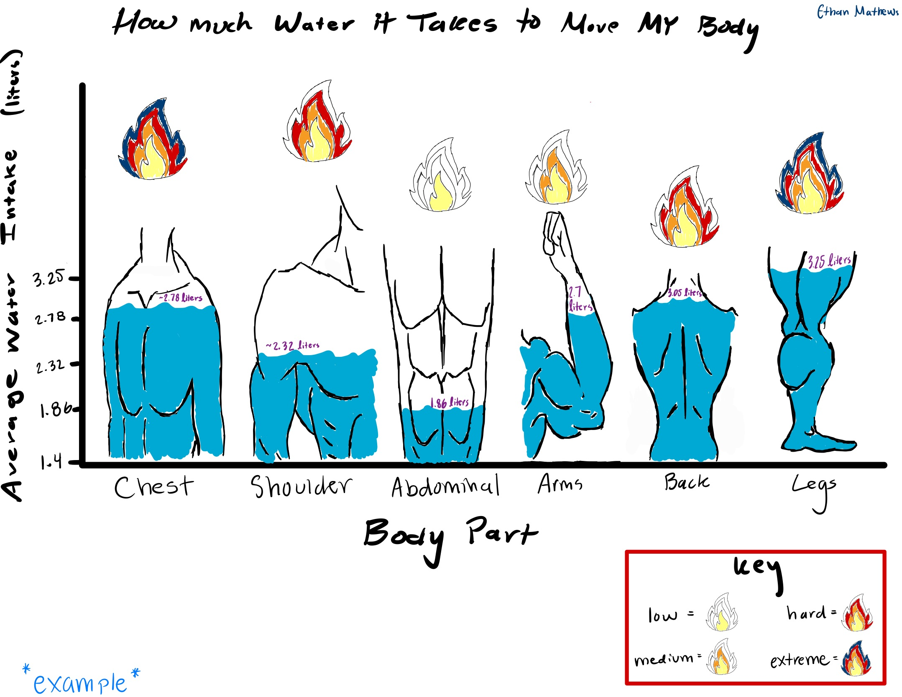
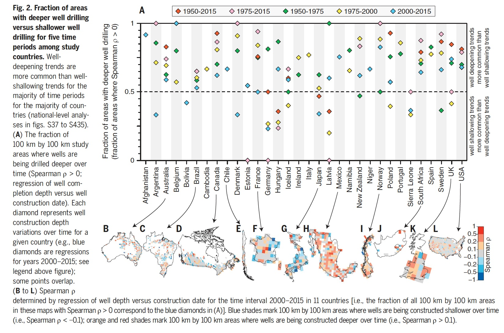

library(tidyverse)
library(gt)
library(janitor)
library(here)
library(readxl)
library(dplyr)
library(fs) # do this in console at the end of the assignment to get the most updated form fs::dir_tree(path = ".", recurse = TRUE)
data <- read.csv(here("data","PersonalStudyHome.csv"))ENVS-193DS_homework-03
link to GitHub Repository: https://github.com/ethan-mathews24/ENVS-193DS_homework-03.git
Part 2. Problems
Problem 1. Personal Data
a. Data Summarizing
The data can be summarized by comparing the distribution of water consumption (liters) between cardiovascular and strength training workouts using a box plot that visually represents the distribution and spread of the data, showing the minimum, first quartile, median, third quartile, and maximum, with the underlying data displayed as jitter points. This comparison is informative for me because I typically associate cardiovascular workouts with being more physically demanding and sweat-intensive, potentially leading to greater water intake than strength training sessions, so I expect that water consumption will be higher on days I run or bike compared to when I lift weights.
b. Visualization
ggplot(data = data, # calling in data frame
aes(x = Workout_Type, # assigning the categorical predictor variable to the x-axis
y = Water_Consumption, # assigning the response variable to the y-axis
fill = Workout_Type)) + # fill color for boxes
# first layer: boxplot
geom_boxplot(color = "black") + # outline color (black)
# second layer: jitter points of raw data
geom_jitter(height = 0, # making sure the jitter points don't move along y-axis
width = 0.15, # narrowing the width of the jitter points
alpha = 0.6, # making slightly transparent in case of overlap
shape = 21, # changing the shape of the points
aes(fill = Workout_Type, # fill color for the points
color = Workout_Type)) + # outline color for the points
theme(plot.title = element_text(size = 12), # adjusting title size
plot.subtitle = element_text(size = 8), # adjusting subtitle size
legend.position = "none", # removing the legend
panel.background = element_rect(fill = "white"), # changing the background color
panel.grid.major = element_line(color = NA), # removing the color from the grid lines
panel.grid.minor = element_line(color = NA), # removing the color from the grid lines
axis.line = element_line(color = "black")) + # adding back the y and x axis lines
scale_fill_manual(values = c("cardiovascular" = "darkorchid1",
"strength" = "deepskyblue")) + # changing the fill of the boxplots
scale_color_manual(values = c("cardiovascular" = "yellow",
"strength" = "red")) + # changing the outline color of the jitter points
labs(title = "How Water Intake Compares to the Type of Workout", # setting title
subtitle = "By Ethan Mathews", # adding a subtitle
x = "Workout Type", # cleaning the x-axis label
y = "Water Consumed (liters)") # cleaning the y-axis label
c. Caption
Figure 1. Cardiovascular workouts are associated with higher water intake. Data from Personal study conducted for Data Science in Environmental Studies (Mathews, E. 2025). Water consumption (liters) was recorded for two types of workouts, cardiovascular (n = xx) and strength training (n = xx). Cardiovascular workouts had a higher median and a more narrow spread of water intake compared to strength training. Transparent open circles represent individual observations (yellow outline = cardiovascular and red outline = strength) and the box plots represent the distribution of values for each group. For the box plots, the colors represent the workout type (purple = cardiovascular and blue = strength training).
d. Table Presentation
data_clean <- data |> # starting data frame
clean_names() |> # clean names to standardize format
select(water_consumption, workout_type) |> # selecting specific columns
mutate(workout_type = recode(workout_type, cardiovascular = "Cardiovascular",
strength = "Strength")) # cleaning table names for future table reference data_summary <- data_clean |> # starting data frame
group_by(workout_type) |> # grouping by the workout type
summarize(
n = n(), # including the number of observations
median = median(water_consumption, na.rm = TRUE), # median calculation
lower = quantile(water_consumption, 0.25, na.rm = TRUE), # lower quantile calculation
upper = quantile(water_consumption, 0.75, na.rm = TRUE), # upper quantile calculation
minimum = min(water_consumption, na.rm = TRUE), # minimum value calculation
maximum = max(water_consumption, na.rm = TRUE)) |> # maximum value calculation
mutate(
across(c(median, lower, upper, minimum, maximum),
~ round(.x, 1))) # rounding the previous calculations to 1 decimal point
data_summary |> # starting data frame that has summary statistics
gt() |> # package for summary table
tab_header(title = html("<strong>Table 1.</strong> Summary Statistics of Water Intake (liters) by Workout Type")) |> # creating and bolding table header/title
cols_label(
workout_type = "Workout Type",
n = "Number of \n Observations",
median = "Median",
lower = "Lower \n Quantile",
upper = "Upper \n Quantile",
minimum = "Minimum",
maximum = "Maximum" # cleaning the column names for the table
) |>
cols_align(
align = "left",
columns = workout_type) |> # changing the alignment
cols_align(
align = "center",
columns = c(n, median, lower, upper, minimum, maximum)) |> # changing to center alignment
tab_style(
style = cell_text(weight = "bold"),
locations = cells_column_labels(everything())) |> # making the column names bold
tab_options(
table.font.size = "small", # changing font size so it can fit better
heading.align = "left") # align the title to the left| Table 1. Summary Statistics of Water Intake (liters) by Workout Type | ||||||
|---|---|---|---|---|---|---|
| Workout Type | Number of Observations | Median | Lower Quantile | Upper Quantile | Minimum | Maximum |
| Cardiovascular | 13 | 2.9 | 2.7 | 3.1 | 2.2 | 3.6 |
| Strength | 23 | 2.2 | 1.9 | 2.5 | 1.0 | 3.1 |
Problem 2. Affective visualization
a. What an Affective Visual Looks Like
When I first thought about affective data visualization, I was drawn to the idea of humanizing data—transforming numbers on a spreadsheet into something more tangible and relatable. For my project, I plan to represent average water intake by illustrating body parts like back, arms, chest, legs, abs, and shoulders along the x-axis. Instead of traditional bars or box plots, each muscle group will be visually represented and “filled” with water to reflect the average amount consumed during workouts targeting that area. To complement this, a small flame icon above each body part will indicate average workout intensity, with four levels/rings that represent the level of intensity for that body part (more rings filled = higher average intensity). This approach personalizes the data, highlighting the physical connection between hydration and strain while making the visualization emotionally engaging and easy to interpret.
b. Sketch of Idea
The sketch is a rough estimate and are not the correct values for the average water intake and intensity level. This will be done in the draft. 
c. Draft of Visualization
data_summary <- data |> # starting data frame creating new summary data frame
clean_names() |> # cleaning the names to standardize format
select(water_consumption, intensity, body_part_trained) |> # selecting necessary columns
mutate(
intensity_score = case_when( # creating a new numeric column based on the intensity level
intensity == "low" ~ 1,
intensity == "medium" ~ 2,
intensity == "hard" ~ 3,
intensity == "extreme" ~ 4, # associating the levels with numerical values so I can calculate the average
TRUE ~ NA_real_)) |> # if it doesn't match any label it will assign it NA
group_by(body_part_trained) |> # grouping the body parts together to calculate averages
summarize(
avg_water = mean(water_consumption, na.rm = TRUE), # calculating the mean of the water consumed by the different body parts
avg_intensity = mean(intensity_score, na.rm = TRUE), # calculating the average intensity by the different body parts
n = n())[insert image here once completed]
d. Artist Statement
The content of my piece: This piece visualizes my personal data collected over the past weeks, showing the average amount of water I consumed relative to the body part I trained, alongside the intensity of each workout. By humanizing the data through illustrated muscle groups and symbolic flame icons, the visualization makes the information more engaging and accessible than reviewing raw notes or spreadsheets.
The influences: The inspiration came from the lecture examples, particularly the violin plots, which sparked the idea of representing each muscle group as a visual shape. From there, I developed the concept of filling each body part with a water level to reflect hydration while layering in flame icons to communicate workout intensity in an emotionally resonant way.
The form of your work: The piece is a digital drawing that combines artistic illustration with data-informed storytelling, allowing for customized body part silhouettes enhanced with color and symbolic elements to convey both quantitative (water intake) and qualitative (intensity) data. This format offers a clear, expressive, and adaptable way to represent personal metrics that can be reused as a fun way to track future trends.
The process: I was initially confronted with a creative block and I needed to take a step back to reexamine my data not just as numbers but as a reflection of physical effort, leading me to abandon traditional charting and instead visualize the body as a site of intensity. This reframing allowed me to design an illustration where hydration and exertion are mapped directly onto the body, transforming abstract data into something spatial and personal.
Problem 3. Statistical Critique
a. Revisit and Summarize
To address their main research question, whether newer groundwater wells are being drilled deeper than older wells in response to declining water tables, the authors use Spearman’s rank correlation. This non-parametric test evaluates the relationship between well construction year (predictor) and well depth (response) across ~39 million wells in 40 countries. A significant positive Spearman ρ indicates that newer wells tend to be deeper, suggesting adaptation to groundwater decline, while a non-significant or negative correlation implies limited or no adaptive response. This approach allows the authors to assess whether well construction practices are keeping pace with groundwater depletion over space and time

b. Visual Clarity
The authors effectively visualize their statistical results in Figure 2, using a clear layout where the x-axis lists countries and the primary y-axis shows the fraction of spatial areas with well-deepening trends (Spearman ρ > 0). A secondary y-axis on the right interprets whether well-deepening or shallowing trends are more common. The figure also includes a time period color key that distinguishes five intervals, enabling comparison of trends over time, though it summarizes model output rather than displaying raw data or uncertainty measures like standard error.
c. Aesthetic Clarity
The authors handle visual clutter effectively by compiling multiple dimensions, country, time period, and statistical trends, into a single, well-organized figure. While the figure takes time to interpret, this integrated approach minimizes the need for multiple separate visuals and keeps the overall paper cleaner. The data:ink ratio is high, as nearly all visual elements communicate meaningful information without unnecessary decoration.
d. Recommendations
One recommendation is to expand the width of the columns representing each country on the x-axis, which would reduce the overlap of points corresponding to different time periods and make the figure easier to interpret. By allowing the points to move horizontally the visual clutter would be minimized. Additionally, the spatial distribution of countries, currently shown in a compact and crowded panel, could be moved into a separate map or supplementary figure. This would allow for a more detailed and meaningful visualization of the spatial distribution of the groundwater well trends, which is a key component of the study’s analysis. Also, some data points are positioned at or beyond the visual bounds of the figure, so adjusting the axis limits to ensure all points fall clearly within the plotting area would improve the figure’s professionalism and readability.